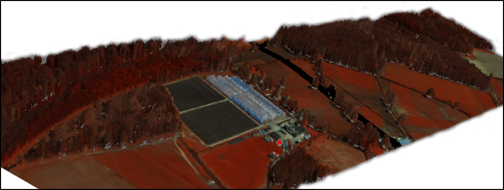

Curriculum Vitae
EDUCATION
2012-2017
Industrial Based Doctorate Degree with the department of Computer Science, University of Bath, UK and the Airborne Research Facility at Plymouth Marine Laboratory, United Kingdom
- Detection of dead standing eucalyptuses in a native Australian forest for managing biodiversity
- Alignment with hyperspectral imagery for generating tree coverage maps
- Generating polygonal meshes from full-waveform LiDAR data in an efficient manner
-
Implementation of the open source software DASOS for easing the usage of full-waveform LiDAR data
More info: http://miltomiltiadou.blogspot.gr/2015/03/las13vis.html
2011-2012
Media School, Bournemouth University, United Kingdom
- Small Projects: Automated tree and forest modelling, cloth simulation
- Major Project: Classification of 3D motion capture data for fall detection of elder people in their home environment
- Showreel: https://www.youtube.com/watch?v=11ImtFBytZk
2008-2011
Department of Computer Science, University of Bristol, United Kingdom
-
Individual Project: Geometrical correspondence tools for 3D noisy facial point clouds
More info: http://miltomiltiadou.blogspot.gr/2012/09/geometrical-correspondence-tools-for.html - Core Units: Image Processing and Computer Vision (which includes Machine Learning and Signal processing), Artificial Intelligence, Computer Graphics, Animation Production
Projects
ASTARTE
Dec 2019 -
Nov 2021
Understanding the long-term impact of land surface temperature changes on Cypriot forests by analysing SAR and thermal time-series of satellite imagery. “The Project EXCELLENCE/0918/0341 is co-financed by the European Regional Development Fund and the Republic of Cyprus through the Research Innovation Foundation”
FOREST
June 2018 -
May 2020
The “FOREST” action is an individual fellowship that aims to advance algorithms using emerging technologies related to full-waveform LiDAR, while assisting a young researcher to further improve her intellectual, transferable and scientific skills related to earth observation and environmental sciences. The Project OPPORTUNITY/0916/MSCA/0005 is co-financed by the European Regional Development Fund and the Republic of Cyprus through the Research Innovation Foundation.
SEO-DWARF
Oct 2016 -
May 2018
It is an H2020 European Research Innovation Stuff Exchange (RISE) project aiming to develop a web-based platform that will provide marine related products created using Sentinel data
- Seconded to Planetek Hellas and Planetek Italia
- Worked on the implementation, testing and comparison of different approaches and calibration for detecting marine fronts using the Sea Surface Temperature product of Sentinel 3
- Provided technical support on the implementing of cloud masking, land masking and turbidity metrics using Sentinel 2 data
Selected Publications
2018
- Detecting Dead Standing Eucalypt Trees from Voxelised Full-Waveform Lidar Using Multi-Scale 3D-Windows for Tackling Height and Size Variations
M. Miltiadou, A. Agapiou, S. Gonzalez Aracil, D. G. Hadjimitsis, Forests
2018
- Detection of dead standing Eucalyptus camaldulensis without tree delineation for managing biodiversity in native Australian forest
M. Miltiadoua, N.D.F. Campbella, S. Gonzalez Aracilc, T. Brown, M. G. Grant, International Journal of Applied Earth Observation and Geoinformation
2015
- Alignment of hyperspectral Imagery and full-waveform LiDAR data for visualisation and classification purposes
M. Miltiadou, M.A. Warren, M. Grant, M. Brown, The International Archives of Photogrammetry, Remote Sensing and Spatial Information Sciences
Reviewing, invited Lectures and workshops
2018
- Reviewer at the Joint Urban Remote Sensing Event (JURSE 2019)
Vannes, France
2018
- Efficient accumulation, analysis and visualisation of full-waveform LiDAR in a volumetric representation with applications to forestry
National Technical University of Athens, Athens, Greece
2017
- Efficient accumulation, analysis and visualisation of full-waveform LiDAR in a volumetric representation with applications to forestry
University of Bari, Bari, Italy
2017
- Efficient accumulation, analysis and visualisation of full-waveform LiDAR in a volumetric representation with applications to forestry
Planetek Italia, Bari, Italy
2016
- Exploration and Visualisation of full-waveform LiDAR Data for Forestry Applications
National Institute For Space Research (INPE), San Jose dos Campos, Brazil
2016
- Full day workshop on full-waveform LiDAR and the open source software DASOS
Interpine Group Ltd, Rotorua, New Zealand
2015
- The state-of-art research about full-waveform LiDAR data
University of Bath, Bath, United Kingdom
Prizes and Awards
2016
Ede and Ravenscroft Academic Prize for Excellence – Finalist
Selected as one of the five finalists for this prestigious prize that recognises the work of the best postgraduate researchers at the University of Bath, United Kingdom.
2012-2016
Engineering and Physical Sciences Research Council (EPSRC) Studentship Funding Award
granted through one of their Doctorate Training Centres, the Centre for Digital Entertainment (CDE), which funds four-year doctoral degree programme. During this time the funded research engineer is embedded in a company (in this case the company was the Plymouth Marine Laboratory)
2015
Student Poster Competition at Silvilaser Conference
promotes researchers at early career by granting them free entrance to the conference
2012
2nd place at beginner′s Quickstep, 3rd place at beginner′s Waltz, 3rd place at beginner′s Cha-Cha, 5th place on beginner′s Jive and 6th place on team Waltz from all levels
Southampton Competition on American Ballroom and Latin4th place on beginner′s Quickstep and 5th place on beginner′s Waltz
Bath Competition on American Ballroom and LatinQueens Anniversary Prizes
selected from her course to represent Bournemouth University at the ceremony
2011
Bristol Plus Award Bristol Career Service
awarded to students who have gained significant professional and life skills through extra-curricular experiences
2008-2011
Scholarship from the Cyprus State Scholarship Foundation
awarded to students who scored excellent grades on their Lyceum Apolytirion
2008
Edexcel High Achiever Award (joint)
in Fine Art GCE Advanced Level
2005-08
National Mathematical Competitions of Cyprus
gained one of the top 10 student’s awards for 4 continuous years
2005
9th Junior Balkan Mathematical Olympiad
selected through 5 National Competitions to represent Cyprus
2005-6
Awards in National Physics Competitions
2006
Award in EU national art competition about relationships of people
Work Experience
Oct 2016 - present
Laboratory of Remote Sensing and Geo-Environment, Eratorshenes Research Centre, Cyprus University of Technology, Cyprus
- Seconded Researcher of the SEO-DWARF project (Jul 2017 - May 2018)
Planetek Hellas, Athens, Greece - Working on the implementation of the Semantic Earth Observation Data Web Alert and Retrieval Framework (SEO-DWARF), which is a European Research Innovation Stuff Exchange (RISE) project
- Worked on the implementation, testing and comparison of different approaches for detecting marine fronts using the Sea Surface Temperature product of Sentinel 3
- Seconded Researcher of the SEO-DWARF project (Apr 2017 - Jul 2017)
Planetek Italia, Bari, Italy - Provided technical support on the implementing of cloud masking, land masking and turbidity metrics using Sentinel 2 data
Oct 2012 - Sep 2016
NERC Airborne Research Facility, Plymouth Marine Laboratory, United Kingdom
- The main placement of the EngD program undertaken by the researcher. As part of this industrial based doctorate degree, the research engineer is emended to an industrial partner, where the main research is taking place
- This placement contributes to the advancement of research while working on industrial problems
Jan 2016 - Mar 2016
Interpine Group Ltd, Rotorua, New Zealand
- Looking into Detecting Dead Standing Eucalyptus Camaldulensis for Managing Biodiversity
- This participation to the forestry industry was consider essential during the EngD of the researcher for understanding the related industrial innovation in the forestry sector
Sep 2012 - Apr 2013
University of Bath, United Kingdom
- Preparing papers for interviews and welcoming potential students during open days
- High confidentiality is required while accessing UCAS applications of students
Oct 2011 - Aug 2012
Bournemouth University, United Kingdom
- Welcoming students at open days, answering student questions and giving them a tour around campus
- Good communication skills and team working skills required, as well as understanding of young potential students
Sep 2010 - Jul 2011
University of Bath, United Kingdom
- Planning classes and teaching Modern Greek language and Greek culture to children under the guidance of the senior teacher
Sep 2009 - Jan 2010
University of Bristol, United Kingdom
- Helped first year students with their assignments on C++ programming
- The researcher improved communication with students and understand the related mentoring aspects
Conference Presentations
2018
- Detection of Dead Standing Eucalyptus Camaldulensis without Tree Delineation for Managing Biodiversity in Native Australian Forest
International Conference on Remote Sensing and Geoinformation of Envirnment (RSCy), Paphos, Cyprus - Oral Presentation
- Detection of Marine Fronts; a Comparison between Different Approaches Applied on the Sea Surface Temperature Product Derived from Sentinel-3 data
International Conference on Remote Sensing and Geoinformation of Envirnment (RSCy), Paphos, Cyprus - Oral Presentation
2017
- Detection of dead standing eucalypt trees without tree delineation for managing biodiversity in native Australian forest
International Conference on Remote Sensing and Geoinformation of Envirnment (RSCy) Conference,Paphos,Cyprus - Oral Presentation
2016
- Improving and optimising visualisations of full-waveform LiDAR data
Eurographics UK: Computer Graphics & Visual Computing (CGVC), Bournemouth, United Kingdom - Oral Presentation
- Detection of dead standing eucalypt trees for managing biodiversity using full-waveform LiDAR data
ForestSAT Conference, Santiago, Chile - Oral Presentation
2015
- Exploitation and visualisation of full-waveform LiDAR data and hyperspectral Imagery
Silvilaser, La Grant Motte, France - Poster Presentation
- Alignment of hyperspectral imagery and full-waveform LiDAR data for visualisation and classification purposes
International Symposium of Remote Sensing of the Environment (ISRSE)Conference, Berlin, Germany - Oral Presentation
2014
- Reconstruction of a 3D polygon representation from full-wavefrom LiDAR data
RSPSoc conference: New sensors for a changing world, Aberytwyth, United Kingdom - Oral Presentation
Volunteering
Oct 2014 - Sep 2016
Centre for Digital Entertainment, University of Bath, United Kingdom
- Initiated the first writing retreat with a colleague
- Duties includes, but not limited to, interviewing potential speakers, hiring venue, arranging meals, scheduling and preparing entertainment
- Supervise and support the next generation of students in order to gain the appropriate experience and organise the following writing retreats
Oct 2013 - Sep 2014
Centre for Digital Entertainment, University of Bath, United Kingdom
- Collecting feedback for improving student experience and attending board meetings
Oct 2012 - Sep 2013
Ballroom and Latin Sports Club of the University of Bath, United Kingdom
- Duties include raising money and advertising the club
Oct 2011 - Sep 2012
Media School, Bournemouth University, United Kingdom
- Collecting feedback, prepare reports and attend board meetings with academics
- Elected to represent Bournmeouth Universtiy at the National Conference of the National Union of Students (NUS)
Oct 2011 - Sep 2012
Multimode Youth centre of Ypsonas, Cyprus
- Painted the theatrical scenery for the children’s spring performance
- Designed the leaflet for the classes and activities taking place the academic year 2011-12 in Photoshop
Interests
ART
Started painting from an early age, gained the High Achiever award on GCE in Fine Art and Design and continued drawing and painting during her own time.
DANCING
Introduced to dancing by joining the American Latin and Ballroom during her EngD and continued with various types of dancing depending on what was available in her city of residents. She currently dances Swing Lindy Hop and Forro. She also attends Capoeira classes.
TRAVELLING
It is a great way of meeting people. Understanding different cultures developed the researcher at personal level.
PSYCHOLOGY
Always interested in understanding people. She completed a course, “Introduction to Psychology”, on Coursera and continued with reading articles and books about psychology, as well as listening to related TED talks.
Languages
Greek (native), Engish (fluent)